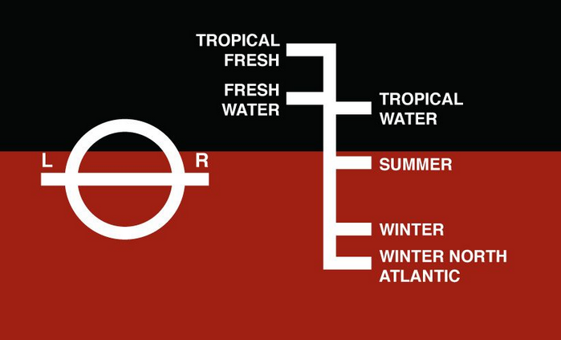

Plimsoll line is a marking where the hull of a ship meets the surface of the water.
I've just read a discussion between Glen Weyl and Scott Alexander about technocracy. It's really hard to figure out what they are actually disagreeing about. My naive understanding is that Weyl may be saying: "When we design mechanisms, we have to pay attention to make them legible to the political class and/or to the general public," and Scott Alexander responding "Sure, but why do you believe the rationalist community to be opposed to the idea?"
And while I have little to add to that discussion - besides maybe adding a case study by pointing out that the gripes that many Europeans have with the European Union seem to be mostly focused on the legibility rather than on the actual performance of the institution - it made me write down couple of thoughts on technocracy that I never bothered to put on paper before.
For the purpose of this article, technocracy, bureaucracy and meritocracy are the same thing: It's a class of people who got their jobs based on their capabilities. The counterpart is the political class, the people who get their jobs based on their political views and/or their loyalty. They may be elected by the public or get selected by a higher-up. I guess there isn't a short word for the latter kind of person, so I'll just go with "political appointee".
Viewed this way, a president or a prime minister are political appointees. So is, say, a director of the tax authority, who may be literally appointed by the prime minister. A head of a department at a ministry may, on the other hand, apply for the position based on a job ad and manage to get hired by passing an interview testing his professional skills. That makes him a technocrat - or bureaucrat, if you will. In the same way, Chinese emperor, even if it sounds weird, is a political appointee and the mandarins are technocrats.
The line tends to be blurry. Even the experts are often hired based on the recommendation of their peers and it's often hard to tell whether a person was hired because they were technically superior or whether they were just buddies with the interviewers.
In any case, the point I am trying to make is that in every state, in every business or organization there's a certain horizontal line separating political appointees on the top from the technocrats on the bottom. Depending on your political preferences you may say that the line separates the good-for-nothings on the top from the people doing the actual work on the bottom or that it separates those with actual skin in the game at the top from the salaried drones below.
One way or another, the line seems to objectively exist. It's hard, for example, to think of an organization where the political appointees are at the bottom of the hierarchy and the technocrats on the top. Once again, based on your political views, you may think that this is just a good institutional design, or that the arrangement is an expression of the power struggle in the society, the consequence of the leisure class oppressing the working class.
Now, I am not trying to advocate for any particular institutional design. What I am saying is that the technocratic Plimsoll line phenomenon is a fact of life. As such it can become a subject of research. There are many questions we can ask: What are the mechanics of organizations ending up being structured this way? Are organizations with a higher technocratic Plimsoll line more successful than those filled top to the bottom with political appointees? What kind of interactions happen across the Plimsoll line? How does information flow through the barrier? The results of the research can then serve to inform the policy decisions, or, on the more theoretical side, to be incorporated into the process of institutional design.
Let me finish with few personal observations. I am going to write them down not because I have a lot of confidence in them, but rather to exemplify the kind of thinking that may be relevant to the question of the technocratic Plimsoll line.
The Plimsoll line is not stable. It's position differs among societies. From personal experience, I still remember the real socialism and back then the Plimsoll line was running much lower than today. To get even a lower level managerial job, you had to be a member of the Party. I guess the situation is the same today in totalitarian regimes like North Korea (you have to be a member of the Communist Party) or Saudi Arabia (you have to be a king's relative). The line also moves over time. From what I can tell from reading the period fiction, it used to run much lower in XIX. century in countries like France of Austria-Hungary, where even the proverbial tobacconist licenses were often granted on the basis of political affiliation.
While it may be tempting to write everything above the Plimsoll line off as a dead weight, there are definitely some arguments in favour of political appointees. Most obviously, the terms of political appointees in democratic countries tends to be short, tied to the election cycle. That, likely, hinders corruption among technocrats. If you don't know who your boss is going to be in one year’s time it's better not to do the corruption thing too much, lest you get fired or prosecuted once the transfer of power happens. (This raises an interesting question of whether the countries, that are formally democratic, but where the power remains in the hands of a single party for a long time - say South Africa - are failing to realize some of the advantages that a democracy is supposed to bring.)
Political culture is (necessarily though?) a culture of scapegoating and ass-covering. That doesn't play well with devising good solutions. Keeping the Plimsoll line clear and isolating the technocrats from the political culture may therefore result in better execution. To give an example, I've used to work as an SRE at Google. SRE is a person responsible for the Google's websites being up and running. One important aspect of that job is so-called "blameless culture". What it means, in essence, is that when one screws up and accidentally brings the website down, they are not blamed. The incident is instead analyzed in an impersonal way, as a failure of the system. Instead of firing the person the changes to the processes are proposed that would have prevented the outage. It's quite clear how that prevents people for hiding information and pointing fingers at each other. Now, some people may object that the blameless culture is an utopia and can't exist in the real world. A hint that it may not be so is that when Google employees sent a letter to the management protesting against Google developing software for military drones. The letter was signed unproportionally more often by the SREs than by the programmers or by the managers. To me, at least, that sounds like SREs enjoy more political freedom and fear less being singled out and scapegoated. As an another hint, watch this talk by a Google employee who was called to fix the failing Obamacare website and, in the process, encountered an environment with much lower Plimsoll line.
Finally, it's hard not to think about the question in the terms of separation of powers. Why can't the political appointees and the technocrats be formally separated in the same way as the executive, the legislative and the judiciary? Why can't they keep each other in check the same way as the branches of government do? Would there be a benefit of defining the Plimsoll boundary explicitly, making clear what are the responsibilities on each side of the line? Would it be worth devising checks and balances to prevent political dysfunction to trickle down through the Plimsoll line to the technocratic problem solving process and, the other way round, to prevent technocrats running amok, in the direction that the general public doesn't want them to go?
May 15th, 2021
Trying to put together my thoughts the next day.
The argument about whether a person should be more political or more technocratic may be besides the point. In organizations and institutions the political layer and technocratic layer tend to be separated. There are people who's job is political, that is to balance the interests of all the stakeholders and decide on what the goals of the organization are. And there are people who's job is technocratic, that is to decide how to achieve those goals. What's more, we probably want it to be that way. There's an inherent conflict of interest between the two roles. If these are merged, technical details of the solution will be used as bargaining chips in the political negotiation, leading to a bad political compromise as well as to a bad technical solution. For an example, see here.
May 16th, 2021